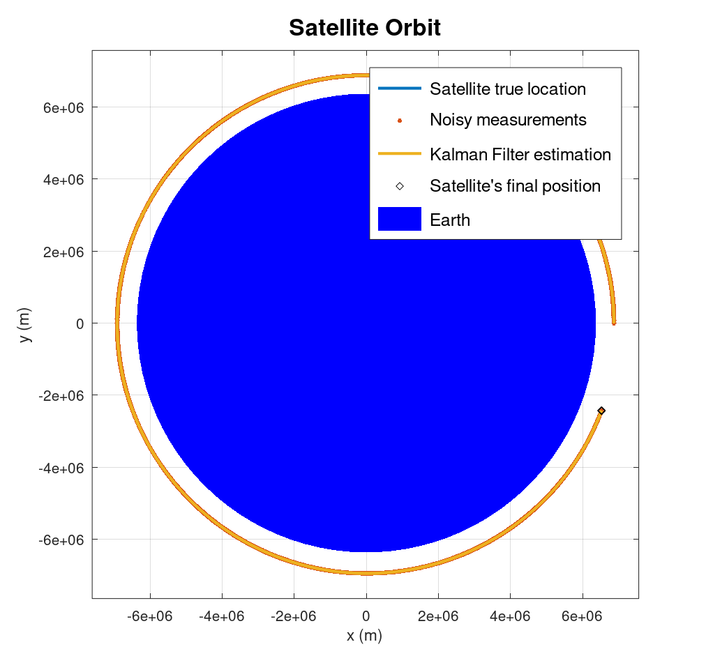
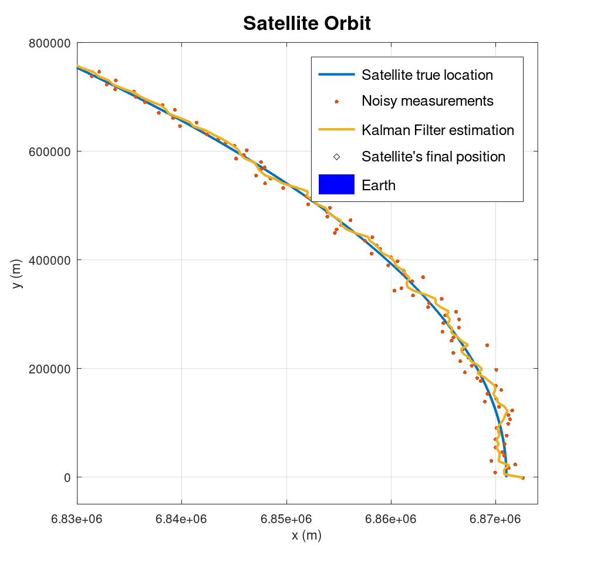
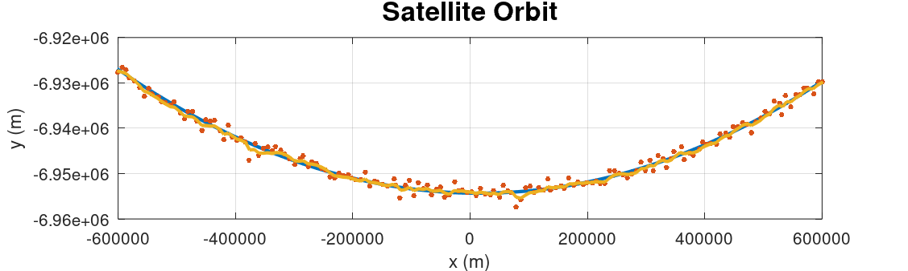

Signal Processing - Kalman Filter
A well-known and powerful tool is the Kalman filter. It has gained a reputation for being complicated to understand, but the idea behind it and its functionality are quite trivial once you simplify all the matrices and equations, focusing on the core concept. I'll illustrate this in the following example.
The Kalman filter is used to estimate the state of a system by combining our prior knowledge with measurements obtained from the system. In simpler terms, it helps us understand how a system behaves by merging what we already know with new measurement data.
In the following example, we'll attempt to estimate the location of a satellite using its motion equations as our model, along with noisy measurements of the satellite's location taken every few seconds.
Let's get started!
First, I created a simulation of a satellite orbiting the Earth. Modeling the motion of a satellite orbiting the Earth involves applying Newton's laws of motion and the law of universal gravitation. (The link to the source files that contain all the equations and physical coefficients can be found at the bottom of this content.)
Now, let's add some noisy measurements. I used a random numbers generator to create a noise with a normal distribution, with zero mean and a standard deviation of 1 km. This is just for our example, in reality, the numbers might be different.
It might appear that the lines on the graph are overlapping, but that's only the case from this perspective. When zooming in, it becomes clear that some measurements deviate by 1.5-2 km.
Now it's time to estimate the satellite location using the Kalman Filter. I'm not going to write the equations, which can be found on the web in many good sources. But I do want to emphasize some points:
1. The Kalman filter consists of two main stages:
Propagating stage - In this part we take our last availble state and propagating it according to the system model, or try to estimate the next satellit location in our example. we will repeat that part until we get a new measurement.
Update stage - Once we receive a new measurement, this is where the magic happens. The filter updates the current state, by considering both our model prediction and the received measurement. Think of it as a weighted average between what we expect the location to be and the actual measurement.
These weights are integral to the filter design and will be calibrated for every implementation. The two weight matrices are the process matrix (usually denoted as Q) and the observation matrix (usually denoted as R).2. The system model is perhaps the most challenging aspect of filter design. It's crucial to select a model that accurately describes our system's behavior while remaining manageable to implement. In this example, I have chosen a model that adheres to these two principles:
Our state refers to the position and velocity of the satellite in a 2D plane. Essentially, this implies that velocity represents the rate of change of position over time.
3. The final step is to initialize the filter. With what? With the best information we have, which is the initial measurement.
Once again, it may seem like the lines on the graph are overlapping, but this is only the case from this particular perspective, as we observed earlier. Nonetheless, this suggests that we are moving in the right direction. Let's now delve deeper into the performance of the filter.
Note that at first, the filter results fluctuate between each new measurement, but as the filter converges, it begins to track the satellite's true motion more accurately.
Let's analyze the results midway through the orbit.
Do the results meet our satisfaction? It depends on the mission's needs. We can enhance the filter's performance in various ways, but we must consider the cost in terms of development time, algorithm complexity, and our requirement for the filter's output response time.
Note: Designing the Kalman filter involves numerous aspects and considerations to be examined. I've attempted to simplify it as much as possible, but I encourage you to explore many quality resources online for further information about the Kalman filter.Thank you for reading! Please don't hesitate to reach out if you have any questions or need further information.
The link to the source code can be found on my GitHub page:
GitHub Repository